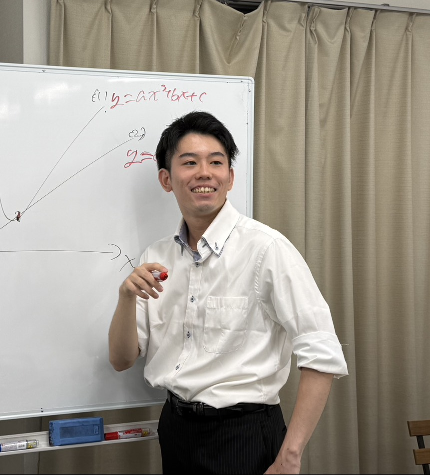

大阪府八尾市に10月新規開校！
開校キャンペーンで10人限定で入塾金無料！
まずは2週間の無料体験と、無料の受験相談から。相談だけで終わっても構いません。
LINEで「体験希望」と送るだけでOK！
入塾金無料／2週間の無料体験 実施中（限定10名）
部活や文化祭準備に熱中し勉強を後回しにしたあなたへ
計画を立てたその日は満足するが、3日後には忘れている。
定期テストは暗記で乗り切れるが、模試になると点数が取れない。
まず、どの大学に行きたいのかすら自分でもよく分かっていない。
1つでも当てはまったら要注意！
そのままでは、志望校合格は遠くなる！

八尾高校76期生OB ／ 大阪公立大学 在学
受験なんざ、きつくて当然！
現役では1.75点差で不合格、翌年宅浪で合格。
現役の挫折に存在していたのは「もっと早く本気になっていれば」でした。
1.2年生の内から少しづつでもいいので一緒に戦いましょ。
高3で部活をやめるなんて悲しい決断をする前に。
「お金を理由に部活を諦めたくない」という思いで、バイトで大学受験の費用を稼ぎながら陸上部の長距離選手を続けました。
部活を最後までやり切りたい気持ちと、受験の焦り。その両方を経験しています。
「今日何をしよう」で悩む時間はゼロに、休憩時間もしっかり作ってショート動画やTikTokを無意味にみる時間を無くす。
23時まで開く自習室。手が止まった問題は、専用AIと現役大学生講師が即答します。
現役の大阪公立大生や京大生が伴走。目標から逆算し、自分の現在地を正確に理解して常にやるべきことを把握する。理解度は確認テストで常にチェック。
私たちが独自に行った学習塾アンケートの結果です。上位3つは、いずれも「教える中身」ではなく「続けられる環境」でした。信稀塾はこの3つに正面から答えます。
自習室が快適でいつでも集中できた（過去に通った塾の良かった点）
166名回答者 368名中
学習計画や進捗を管理してくれるサービスが欲しい
118名回答者 311名中
大学選びや自己分析のサポートが欲しい
88名回答者 311名中
ANSWER 01
週次面談とカレンダー共有
1時間単位の予定を共有し、実行できたかを毎週確認します。
ANSWER 02
23時まで開く自習室
質問対応AIと講師の質問対応で分からないが無くなる。
ANSWER 03
面談で自分理解
自分の苦手、どこでつまずくのかを分析。自分が本当に行きたい大学はどこなのかも一緒に考えます。
出典：信稀塾 学習塾アンケート（受験経験者500名超）。項目ごとに有効回答数が異なります。
映像授業を観るだけでも、タスクを管理されるだけでもない。追加費用のない定額で、計画から実行まで毎週伴走します。
| 信稀塾 | 東進 | 武田塾 | 地元の個人塾 | |
|---|---|---|---|---|
| 進捗の管理と面談 | 月次の作戦会議＋週ごとの面談＋毎日のタスク確認 月初で目標を設定して、週ごとに進めているかを確認！毎日何やるかを一緒に決めて継続できる！ |
担任面談は定期。進捗は見えるが自走が前提 | タスク管理と確認テスト。管理は強い がそれぞれに合わせた指導はできない。 | 教室ごとに異なる |
| 無料体験の中身 | 2週間。英語か数学の1単元を、共通テスト7割まで仕上げる 確認テストの結果と学習記録をお渡しします |
体験授業（映像の視聴） | 無料相談・体験特訓からすでに通常費用がかかる | 体験授業1〜2回 |
| 入塾金・教材費 | なし 開校記念として入塾金無料（限定10名） |
入学金あり。講習費が別途 | 入会金あり。参考書は基本自分で選べない | 教室ごとに異なる |
各塾の公開情報および当塾調べ（2026年8月時点）。金額は学年・コース・校舎により異なります。正確な費用は各塾へご確認ください。
数学または英語から、あなたが伸ばしたい単元を1つ選んでください。共通テストで7割取れるレベルまで、面談と確認テストで到達させます。
単元は生徒本人に選んでいただきます。「どこが弱いか分からない」場合は、初回面談の自己分析で一緒に決めます。到達目標は共通テストで7割。
＊単元によっては別途問題を作成し、確認テストをしてもらいます
現役大学生コーチとの面談で単元の攻略順、一日にやる量、どこでつまづいてどうしたら直るのかまで分析し苦手を得意にします。
「やった気になる」を防ぐため、体験中も確認テストを実施。理解の穴を見つけ、次の面談で埋めます。
教材費・入会金も不要。合う・合わないを確かめてから、続けるかどうかを決めてください。
トークで「体験希望です」と送るだけ。日程調整までLINEで完結します。
志望校と現状を整理し、体験で扱う1単元を決めます。約60分。
面談＋タスク確認＋確認テストで、選んだ単元の苦手を克服。
テスト結果と学習記録をお渡しします。続けるかは自由です。
答えだけでなく、解くときの考え方の順番まで書きました。信稀塾の面談では、この「手が動く順番」を1問ずつ言葉にしていきます。
すでに平方完成された y = a(x−p)2+q の形。ここでは a = −2、頂点は (3, 7) と一目で読み取れます。
a = −2 < 0 なので、グラフは上に凸。上に凸の放物線は、頂点で最大値をとります（最小値はなし）。
(x−3)2 ≧ 0 だから −2(x−3)2 ≦ 0。よって y ≦ 7 で、等号は (x−3)2 = 0、つまり x = 3 のとき。
x = 3 のとき、最大値 7
つまずきやすい点：「最大値」を聞かれているのに x = 3 と答えてしまう。求められているのは y の値です。
指数の底は 9、対数の底は 3。9 = 32 と書き換えて、両方を 3 に統一するのが出発点です。
9log35 = (32)log35 = 32log35。(am)n = amn を使っただけです。
2log35 = log352 = log325。対数の前の数は、真数の指数に移せます。
3log325 = 25。「底と対数の底が同じなら、真数がそのまま残る」——ここまで来れば一瞬です。
25
つまずきやすい点：log35 を計算しようとして手が止まる。値を出さずに、指数法則と対数法則で形を変えるだけで解けます。
八尾高校76期生OBが、受験相談をお受けします。塾に入る・入らないは関係ありません。学校の進度、部活との両立、志望校の決め方まで、そのままお聞きください。
相談は無料。ご相談だけで終わっても構いません。
LINEで無料受験相談を予約対面オンライン両対応／生徒本人・保護者どちらでも／予約は公式LINEから
全プラン定額制で、今なら入塾金等の諸経費が一切かかりません！学年や科目数によって最適なプランが変わるため、面談で一緒に選びます。金額だけ先に知りたい方は下からご覧ください。
| プラン | 月謝（税込） | 面談時間 | 主な内容 |
|---|---|---|---|
| オンラインプラン 1教科〜 |
19,800円 | 45分／週 | 月初面談、週次計画、カレンダー共有、AI質問対応 |
| 一教科集中コース | 29,700円 | 45分／週 | 上記＋保護者への週次レポート、確認テスト |
| 三教科バランスコース 主力プラン |
49,500円 | 60分／週 | 上記＋生徒または保護者面談 月1回追加 |
| 国公立特攻コース 主要8科目対応 |
79,200円 | 90分／週 | 上記＋生徒または保護者面談 月2回追加 |
金額は税込。入塾金・教材費はかかりません。夏期・冬期講習などの追加費用も一切ありません。開校記念として入塾金無料（限定10名）。
＊料金プランには多少の変動ありますのでご了承ください。
LINEで「体験希望です」または「相談したいです」と送るだけで大丈夫です。返信は代表の丸田が直接お返しします。
公式LINEを友だち追加する入塾金無料／2週間の無料体験／教材費なし